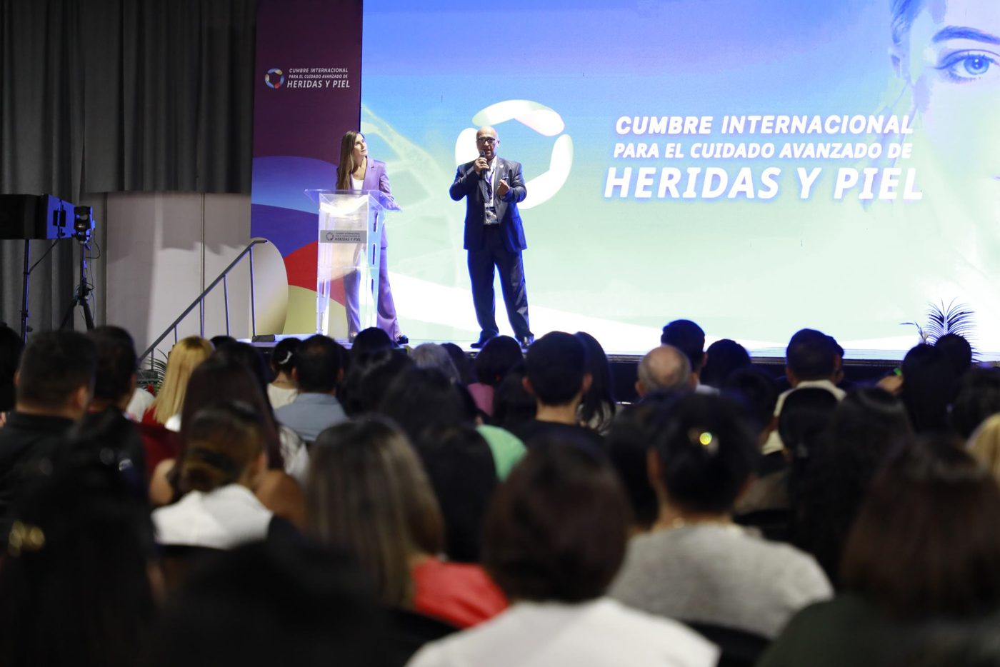
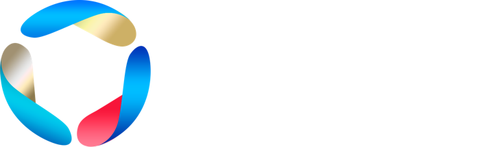

Unidad de Cuidado Avanzado de Heridas y Piel · Caracas
Prevenimos y tratamos tus heridas.
Cuidamos tu piel.
¿Tu herida no sana como esperabas, vas a operarte o tienes un familiar en cama por mucho tiempo? Somos una unidad multidisciplinaria y te atendemos en nuestras sedes, en tu casa o por telemedicina.
¿Cómo podemos ayudarte?
Elige un área para ver sus opciones.
Llevamos el cuidado de heridas y la prevención a las organizaciones, con convenios a la medida.
Un médico evalúa tu caso y diseña tu plan de curación. Te atendemos donde te quede mejor.
Nuestros fisiatras evalúan tu caso y definen tu plan, con el mismo equipo láser que usamos en la cicatrización avanzada de heridas.
Actuar a tiempo evita que una herida se complique. Y muy pronto, un área dedicada a tu piel.
Tratamos heridas simples y de
difícil cicatrización
Cada herida es diferente. Un médico evalúa tu caso y diseña un plan de curación con apósitos de tecnología avanzada.
Apósitos de tecnología avanzada
Conoce para qué sirve cada tecnología y consulta con un especialista cuál es la indicada para tu herida.
¿Te interesa un producto?
Déjanos tu nombre y tu teléfono y una asesora te llama para orientarte y coordinar tu compra.
Historias reales de pacientes


Organizadores de la Cumbre Internacional para el Cuidado Avanzado de Heridas y Piel
Reunimos a profesionales de la salud para compartir los avances en el cuidado de heridas. Organizamos la edición 2026 y nos vemos de nuevo en 2027. [Fecha de la Cumbre 2027, cuando esté confirmada]
Conocer la CumbrePreguntas frecuentes
¿Las curaciones son dolorosas?
Usamos técnicas de limpieza cuidadosas y, si es necesario, anestésicos locales para tu comodidad.
¿Cuánto tiempo tardará en cerrar mi herida?
Cada paciente es único. Después de evaluar tu herida, el especialista te explica el plan de tratamiento y el tiempo estimado.
¿Pueden atenderme en mi casa?
Sí. Tenemos atención domiciliaria en Caracas. En algunas zonas no aplica; en esos casos te ofrecemos telemedicina.
¿Qué debo llevar a mi primera consulta?
Tus informes médicos previos, la lista de medicamentos que tomas y, si tienes, estudios de imagen o exámenes de laboratorio recientes.
Una herida que no sana afecta tu calidad de vida. No esperes más.
Escríbenos y coordinamos tu evaluación.
¿Prefieres que evaluemos tu caso primero? Agenda con nosotros una evaluación de tu herida →